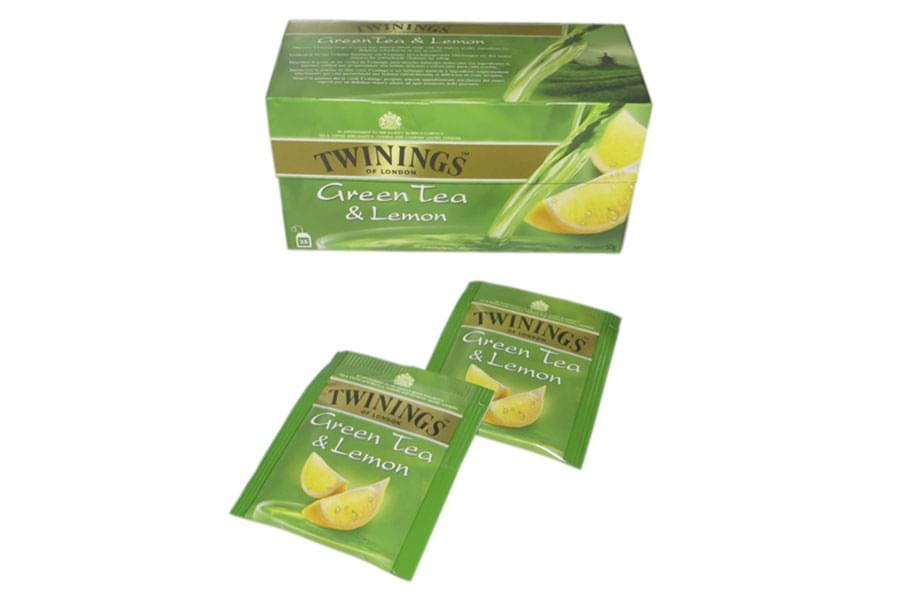

<!--#set var="title" value="Чайные конверты • НекстПринт" -->
<!--#include virtual="/parts/header.html" -->
<section class="brand">
    <div class="container">
        <div class="title title_tea"><h3>Чайные конверты</h3></div>
        <div class="swiper-container mySwiper">
            <div class="swiper-wrapper">
              <div class="swiper-slide">
                <a data-fancybox="gallery" data-src="images/dist/tea-envelope-1.jpg">
                    
                </a>
              </div>
              <div class="swiper-slide">
                <a data-fancybox="gallery" data-src="images/dist/tea-envelope-2.jpg">
                    
                </a>
              </div>
              <div class="swiper-slide">
                <a data-fancybox="gallery" data-src="images/dist/tea-envelope-3.jpg">
                    
                </a>
              </div>
              <div class="swiper-slide">
                <a data-fancybox="gallery" data-src="images/dist/tea-envelope-4.jpg">
                    
                </a>
              </div>
              <div class="swiper-slide">
                <a data-fancybox="gallery" data-src="images/dist/tea-envelope-5.jpg">
                    
                </a>
              </div>
            </div>
            <div class="swiper-pagination"></div>
            <div class="swiper-button-prev"></div>
              <div class="swiper-button-next"></div>
        </div>
        <p>
            Компания <strong>“Некст Принт”</strong>  производит чайные конверты по заказу клиентов. Размер конвертов заказчик выбирает самостоятельно из предложенных вариантов. На заказанную партию конвертов для чая мы наносим полноцветную печать, благодаря этому они полностью соответствуют фирменной стилистике и заявленным требованиям клиента. Чайный конверт способен обеспечить высокую герметичность упаковки пакета для чая, поэтому расфасованный чай не утратит своего первозданного аромата и вкуса в процессе хранении и транспортировки.
        </p>
        <p>
            Наша дизайн-студия грамотно разработает эффектный логотип, который привлечет внимание большого количества потенциальных клиентов. <strong>Чайные конверты</strong> – это индивидуальные бумажные пакетики, которые применяются для упаковки чайного фильтра с ярлычком. Основным преимуществом использования конвертов заключается в том, что такой чай удобно брать с собой и при этом не обязательно носить с собой всю пачку чая. Чайные конверты являются полностью герметичной упаковкой, которая сохраняет вкусовые, ароматические свойства чайного напитка и не пропускает влагу. Конверты для чая используются на производстве, а также в местах продажи – супермаркетах, магазинах и специализированных чайных магазинах.
        </p>
        <p>
            Мы рады предложить Вам изготовление чайных конвертов из следующих видов материалов:
        </p>
        <ul>
            <li><i class="fa fa-check"></i><h5>ламинированная бумага (бумага + ПЭ + сурлин, бумага + ПЭ);</h5></li>
            <li><i class="fa fa-check"></i><h5>триплекс;</h5></li>
            <li><i class="fa fa-check"></i><h5>BООРР, ламинаты BООРР+ BООРР, ПЭТ+ BООРР;</h5></li>
            <li><i class="fa fa-check"></i><h5>офсетная бумага 40 – 80 гр.</h5></li>
        </ul>
    </div> 
</section>
<!--#include virtual="/parts/consultation.html" -->
<!--#include virtual="/parts/footer.html" -->